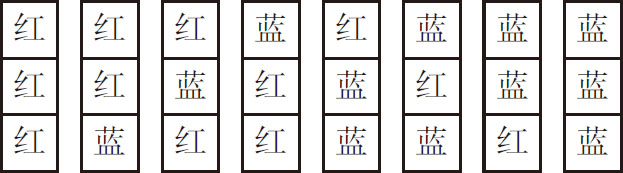
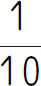

抽屉原理也称为鸽笼原理或鞋箱原理，它是组合数学中一个重要的原理．抽屉原理可以简单地概括为：如果把n ＋1个球或更多的球放到n 个抽屉，必有一个抽屉至少有2个球．
【解题技巧】
利用最值原理解题：将题目中没有阐明的量进行极限讨论，有时也称为“最不利原则”，即从最糟糕的极端情况开始讨论问题．
【基本公式】
“球”÷“抽屉”＝商……余数
分以下两种情况讨论．
（1）当余数＝x 时，至少有“商＋1”个球在同一个“抽屉”中．注：1≤x ＜（n -1）；
（2）当余数＝0时，至少有“商”个“球”在同一个“抽屉”中．
（第十三届“中环杯”初赛）一个口袋中有51个编有号码的相同的小球，编号为1、2、3、4、5的小球分别有3个、6个、10个、12个、20个．任意从口袋中取球，至少要取出___个小球，才能保证其中至少有7个号码相同的小球．
【答案】 28．
【解析】 考虑最差情况：3个1号球，6个2号球全部取出，其他3、4、5号球各取6个，一共取出3＋6×4＝27（个），再任意取出一个球，必能保证有7个号码相同的小球，即为3＋6×4＋1＝28（个）．
【举一反三1】
布袋里有同样重量、同样大小的红球、绿球、黑球和白球各10个，至少要摸出___个球，才能保证有2个同色的球被取出．
五年级学生中有123人是同年出生的，他们当中至少有___人在同一个月出生；至少有___人是在同一个星期出生．
【答案】 （1）构造“抽屉”，把这12个月看作12个“抽屉”，考虑最差情况，即每个“抽屉”的人数尽量平均，123÷12＝10……3，10＋1＝11（人），所以至少有11人在同一个月出生；
（2）构造抽屉，把一年大约有52个星期看作52个抽屉，考虑最差情况，即每个抽屉的人数尽量平均，123÷52＝2……19，2＋1＝3（人），所以至少有3人是在同一个星期出生．
【举一反三2】
某班有52名同学，一年中总有一个月最少有___名同学都在这个月出生．
把一个长方形画成3行9列共27个小方格，然后用红、蓝铅笔任意将每个小方格涂上红色或蓝色．是否一定有两列小方格涂色的方式相同？
【答案】 是．
【解析】 根据题目可以得出共有以下8种涂色方式．

将这8种涂色方式看作是8个抽屉，9列方格看作是9个物品．那么9个物品放入8个抽屉，则必有一个抽屉的物品数不少于2件，即一定有两列小方格涂色的方式相同．
【举一反三3】
在8行8列的方格表中，每个空格分别填上1、2、3这三个数字中的任意一个，使得每行、每列及两条对角线上的各个数字的和互不相等，能不能做到？
有100个旅客入住99个单人间，这100个旅客每次有99个人同时入住，管理员给每人配了一些钥匙，他想让每人都能入住，且不用找别人借钥匙，问他至少一共需要配多少把钥匙？
【答案】 198．
【解析】 由于共有99个房间，却有100人住店，想让每人都能入住且不用找别人借钥匙，那么至少要保证每个房间有两把钥匙．可以这样分配钥匙：1，2，3，…，99号人分别拿一把1，2，…，99号房间钥匙，第100个人拿着每个房间的钥匙．这样，假如第100个人不住，其他人就都可以住进去．假如第100个人住店，1，2，…，99号中就有一个不住，100号就能进入这个房间入住．所以，他至少要配99＋99＝198（把）钥匙．
【举一反三4】
有13个箱子，现在往里面装苹果，要求每个箱子里装的苹果都是奇数个，无论这些苹果怎么放，总能找到4个箱子里苹果个数是一样的，问：最多有多少个苹果？
1．小李的袜子筐里有12只脏袜子和20只干净袜子．这天，他迷迷糊糊地从筐中拿袜子，每次拿2只．如果其中有脏袜子就会把2只都扔到地上，然后从筐中重拿．那么，他至少拿___次才能保证一定拿到2只干净的袜子．
2．一只箱子装有标号为1、2、3、…、2005的2005张卡片，现从箱子中随意取出x 张卡片，但是为了确保这x 张卡片中至少有2张卡片标号的差是5，那么x 至少是_____．
3．一群小朋友购买售价是3元和5元的两种商品．每人购买的数量最少是一件．他们也可购买相同的商品．但每人的购买总金额不得超过15元，若小朋友中至少有三人购买的两种商品的数量完全相同，问这群小朋友最少有___人．
4．有一个由20×20的小方格组成的大正方形．用1～9这9个数字中的任意一个填在每个小方格中，把形如“田”的田字格图形中的4个数相加，得到一个和数．那么，图中许许多多的和数中，至少有___个相同．
5．10条直线中的每一条都将矩形分成两个面积比是1∶2的梯形，那么这10条直线中至少有___条交于一点．
6．图书室有故事书、科技书、连环画和作文书，六年级同学有的借1本，有的借2本，有的借3本，还有的借4本，至少去___人才能保证一定有两人借的书是一样的．
7．至少取出多少个真分数，才可以保证其中必有两个真分数之差小于

？8．某小学五年级（2）班选两名班长．投票时，每个同学只能从4名候选人中挑选2名．这个班至少应有多少个同学，才能保证有8个或8个以上的同学投了相同的2名候选人的票？